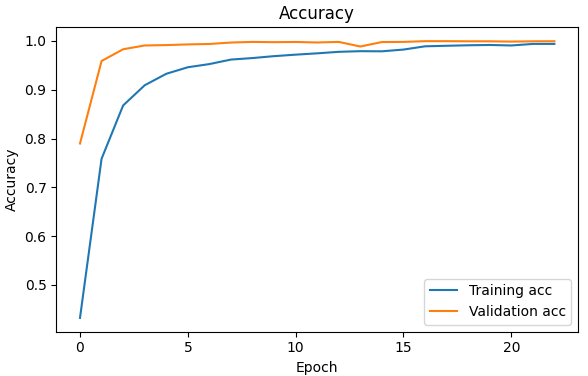
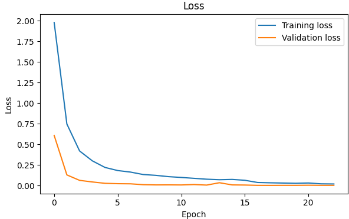
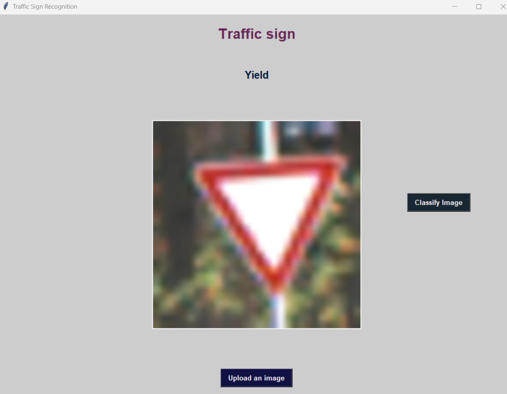

TRAFFIC SIGN RECOGNITION USING DEEP LEARNING AND TKINTER



Project Overview
Developed a deep learning-based traffic sign classification system using the GTSRB dataset, achieving high accuracy suitable for real-world scenarios. The trained model was integrated into a Tkinter-based GUI application that allows users to upload traffic sign images and receive real-time classification results, demonstrating a complete end-to-end pipeline.
Python
Tensorflow
Keras
NumPy
Pillow
Matplotlib
Tkinter
Technical Implementation
CNN Model Design & Training:
- Built a custom CNN architecture incorporating batch normalization, dropout, and data augmentation to improve generalization and reduce overfitting
- Used TensorFlow and Keras for model development, training, and evaluation
Data Processing:
- Performed image resizing, normalization, and augmentation (rotation, scaling, shifting) for robust training
- Preprocessed input images for consistency and optimal feature extraction
GUI Integration:
- Designed a Tkinter-based GUI allowing users to upload images and view classification results with real-time model inference
- Connected the trained model with the GUI using Pillow and NumPy for image handling and preprocessing
Deployment:
- Saved the trained model using Keras (.h5) format for efficient loading and reuse in applications
Results
- Validation Accuracy: 99.95%
- Test Accuracy: 98.6%
- Demonstrated high-performance traffic sign recognition, even on previously unseen data, with fast and accurate predictions
- Successfully deployed a complete, user-facing application, highlighting the practical utility of deep learning models in transportation and driver-assistance systems